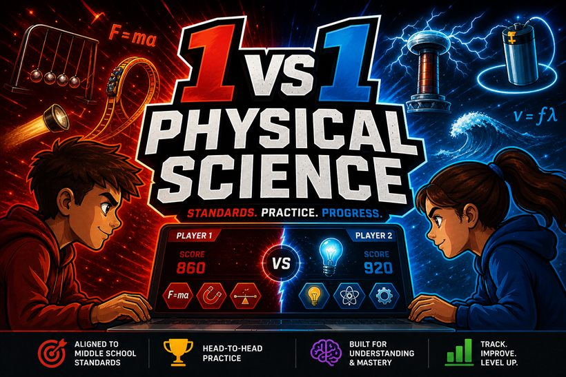
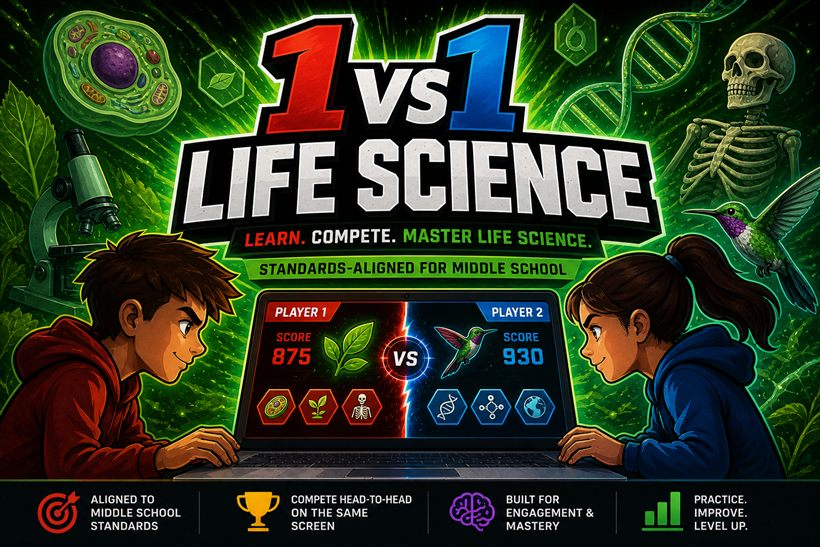
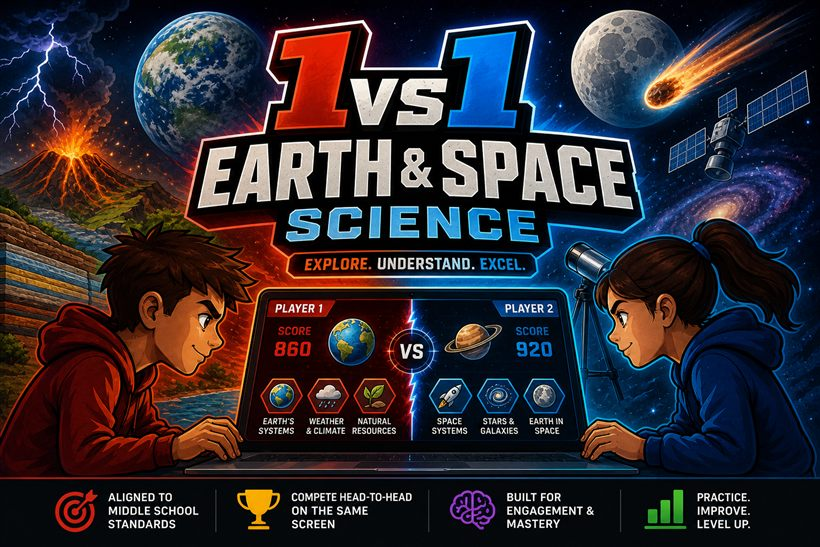

A head-to-head science arcade — Red battles Blue across dozens of standards-aligned mini-games. Two players, one keyboard (or touch).
Pick your class to open its game hub. Three games are always free, two more per standard rotate free every week, and any game can be unlocked and downloaded to keep for $2.

37 games across all five physical-science standards — atoms, Newton's laws, waves, circuits and more.
Open Physical Science →
Head-to-head games across all five life-science standards — classification, body systems, heredity and ecosystems.
Open Life Science →
Head-to-head games across all six Earth & Space standards — the solar system, moon phases, the water cycle, weather, geology and energy resources.
Open Earth & Space →